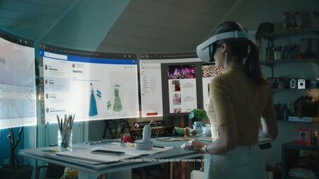

FUTURO
A medida que avanza la tecnología se van implementando algunas herramientas las cuales nos facilitan la interacción humano – computadora, asistentes virtuales y “wereables” de realidad aumentada permitirán la creación de una nueva era digital.
Estos dispositivos son controlados a través del reconocimiento de movimiento de los dedos empleando cámaras integradas de video y también a través de controles especiales que se activan con las manos.
Los lentes de realidad aumentada también podrían ser controlados a través de la voz, simplemente dando instrucciones que activen las diferentes funciones de los lentes. Entre los jugadores más importantes se encuentran Google y Amazon
El mundo digital futurista a mediano plazo es uno donde puedas elegir unos lentes en lugar de un smartphone, con el diseño que más te guste, que tengan todas las aplicaciones para acceder a internet, a tus redes sociales, llamar, jugar, aprender y crear; y que puedas controlar a través de la voz ó con simples movimientos de tus brazos.
